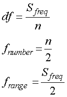

さて，極端な話，フーリエ変換においては，必要なサンプル数は，
目的となる波形を1波形分
のみでいいのです．
なぜなら，勝手にフーリエ変換が両脇に同じは系をつなげているからです．
じゃあ，１００Hz，の周波数の情報が欲しい場合，１／１００秒＝10ミリ秒でいいのでしょうか？
サンプリング周波数は，ナイキスト周波数という定理があり，
サンプリング周波数の１／２
と言う定義があります．
ですので，
１００Hz×２＝２００Hz
となります．
つまり，１００Hzの情報を得るためには，
サンプリング周波数：２００Hz
サンプル時間：１０ミリ秒
なのでしょうか？
理想的にはそうかも知れません．
しかし，データには必ずノイズが含まれています．
さらには，フーリエ変換の計算につきものの計算ノイズも．．．
じゃあ，許す限り長い長いデータをとればいいのでしょうか？
しかし，先に述べたように，サンプル数，ｎ，は以下の式で影響し，

ｎが多くなると，ｄｆ，が小さくなる，という方向に向かいます．
つまり，単に周波数分解能が上がるだけ，なのです．
さらに，ｎが多くなると計算時間も非常に長くなります．
ｎが2倍になれば，計算時間も2倍，とは行かずに指数関数的に時間がかかってきます．
従って，あまり長いサンプルをそのままフーリエ変換にかける意味はないのです．
そこで，登場したのが，加算平均，です．
詳しくは次ページへ．